실습 1 - iris
실습 설명: Iris(붓꽃) 분류
Iris(붓꽃)의 품종은 백가지 종류가 넘지만 여기서는 딱 3개만 구분해 보자.
- setosa(세토사)“ 꽃잎이 상대적으로 매우 작고 둥근 편.
- versicolor(버시컬러): 중간 크기, 푸른색과 보라색이 강하다.
- virginica(버지니카): 꽃잎과 꽃받침이 가장 크고 길쭉하다.
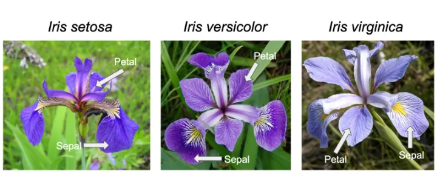
사진 출처: Iris Flower Classification - Peace Ikeoluwa Adegbite 미디엄
구분하는 기준은 다음과 같다.
- 꽃받침(sepal)의 길이
- 꽃받침(sepal)의 너비
- 꽃잎(petal)의 길이
- 꽃잎(petal)의 너비
길이, 너비 데이터의 숫자 단위는 모두 cm 이다.
파일 읽어오기
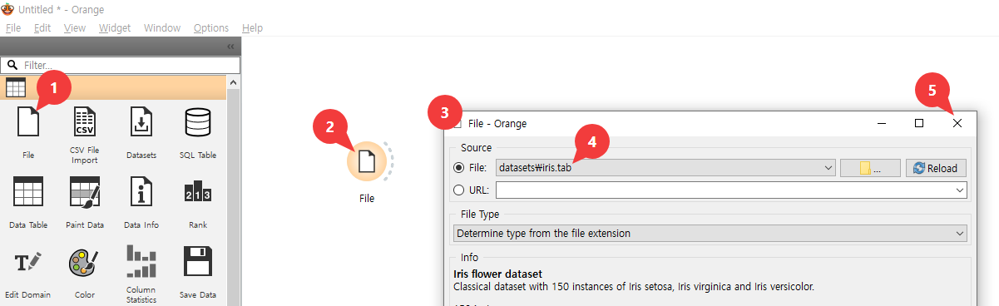
-
위젯 중 “File“을 클릭한다.
-
추가된 “File” 노드를 더블클릭한다.
-
파일 선택 창이 나타난다.
-
Source에서 “iris.tab“을 선택한다.
-
창을 닫는다.
필드명을 한글로 바꾸기
생소한 영어단어들 때문에 학습에 방해가 되니, 필드명을 한글로 바꾸자.
다음과 같이 바꾼다.
- sepal length: 꽃받침 길이
- sepal width: 꽃받침 너비
- petal length: 꽃잎 길이
- petal width: 꽃잎 너비
- iris: 품종
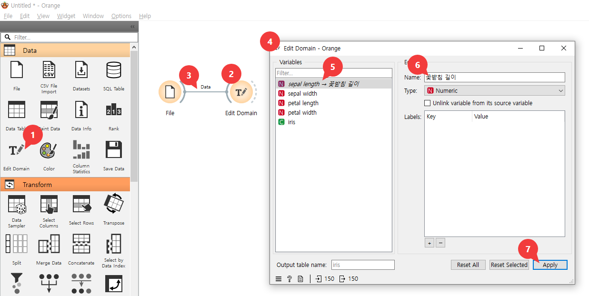
-
왼쪽 위젯 중 “Edit Domain“을 선택한다.
-
“Edit Domain” 노드가 나타난다.
-
“File” 노드와 “Edit Domain” 노드를 연결하고 “Edit Domain” 노드를 더블클릭한다.
-
“Edit Domain” 창이 나타난다.
-
Iris.tab 이 가지고 있는 데이터의 필드 목록이 나타난다. 이 중 제일 위 “sepal length“를 선택한다.
-
“꽃받침 길이“라고 입력한다.
-
“Apply” 버튼을 누른다. “sepal width → 꽃받침 길이” 라고 나타난 걸 볼 수 있다.
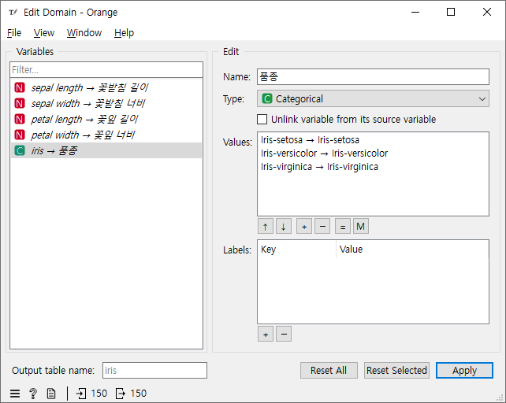
위와 같은 방식으로 5개 필드 모두 바꾸고 창을 닫는다.
데이터 확인
한글화가 잘 되었는지, 어떤 데이터가 있는지 확인한다.
테이블 형태로 보기
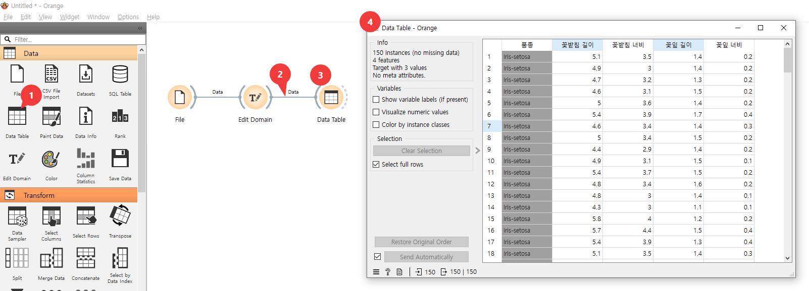
-
“Data Table” 위젯을 선택한다.
-
“Edit Domain” 노드와 “Data Table” 노드를 연결한다.
-
“Data Table” 노드를 더블클릭한다.
-
iris Data Table이 나타난다. 필드명이 한글인지 확인하자.
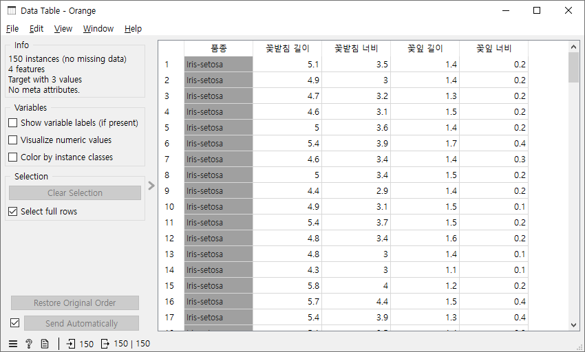
그래프로 시각해 해서 보기
scatter plot(산점도 시각화)
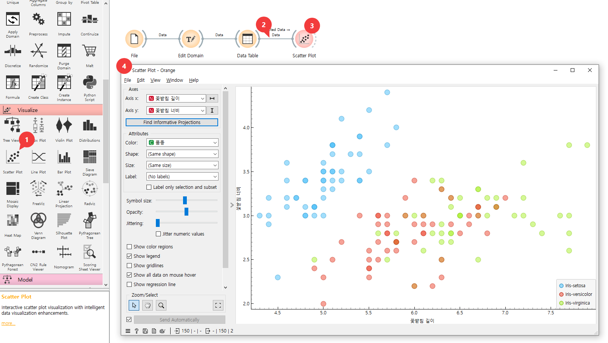
-
“Scatter Plot“를 선택한다.
-
“Data Table” 노드와 “Scatter Plot” 노드 사이를 연결한다.
-
“Scatter Plot” 노드를 더블클릭한다.
-
그래프가 나타난다.
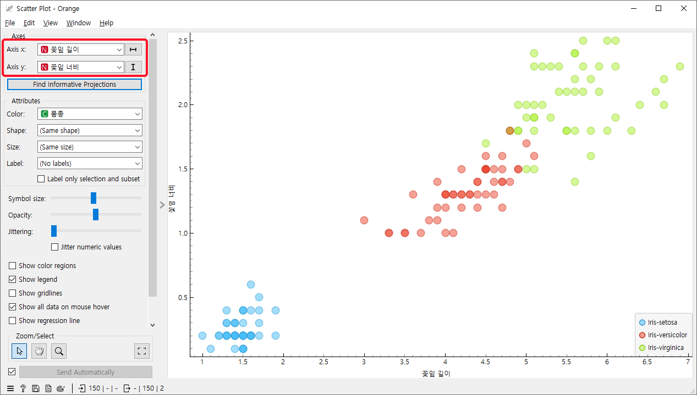
꽃잎 길이와 꽃잎 너비로 바꾸고 보면 파란색으로 표시된 세토사의 꽃잎 크기가 매우 작다는 것을 알 수 있다.
Distributions(분포 시각화)
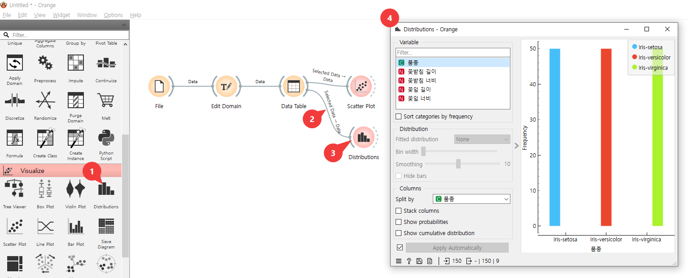
-
“Distributions” 위젯을 클릭한다.
-
“Data Table” 노드와 “Distributions” 노드를 연결한다.
-
“Distributions” 노드를 더블클릭한다.
-
Distributions 창이 나타난다.
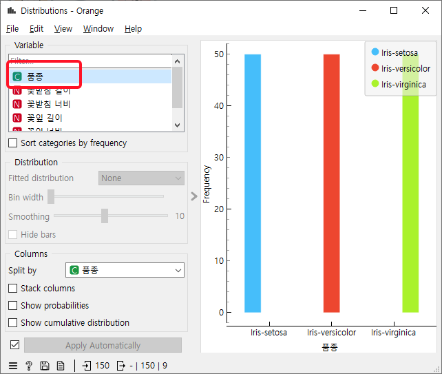
갯수를 보여주는 창이기 때문에, “품종“을 선택하면 각 품종이 50개씩 있음을 알 수 있다.
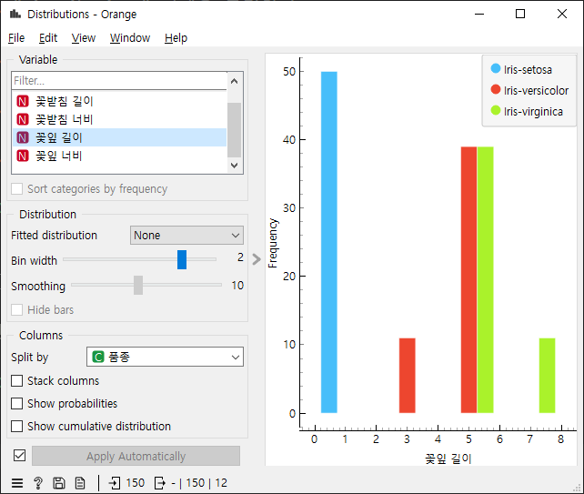
“꽃잎 길이“를 선택하면 세토사의 크기가 매우 작은게 50개 있음을 알 수 있다.
버지니카의 꽃잎은 80% 정도는 5cm 정도이고, 20% 정도는 7.5cm 정도임을 알 수 있다.
box plot(상자 수염 그림)
box plot은 다음과 같은 통계적 특성을 한 번에 보여준다.
- 최대값
- 최소값
- 중앙값(median. 평균값이 아닌 크기 순으로 정렬했을 때 가장 중앙에 있는 값)
- 사분위수(크기 순으로 정렬했을 때 하위 25%, 하위 50%, 하위 75%의 값)
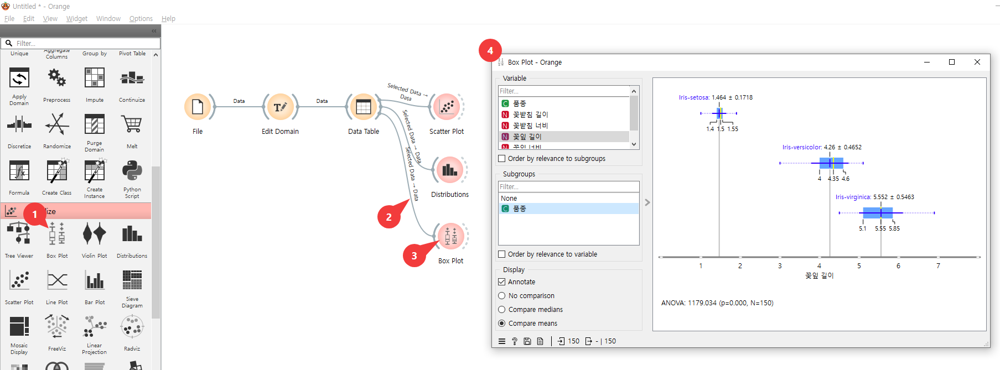
-
위젯에서 “Box Plot“을 클릭한다.
-
“Data Table“과 “Box Plot“을 연결한다.
-
“Box Plot“을 더블클릭한다.
-
Box Plot 창이 나타난다.
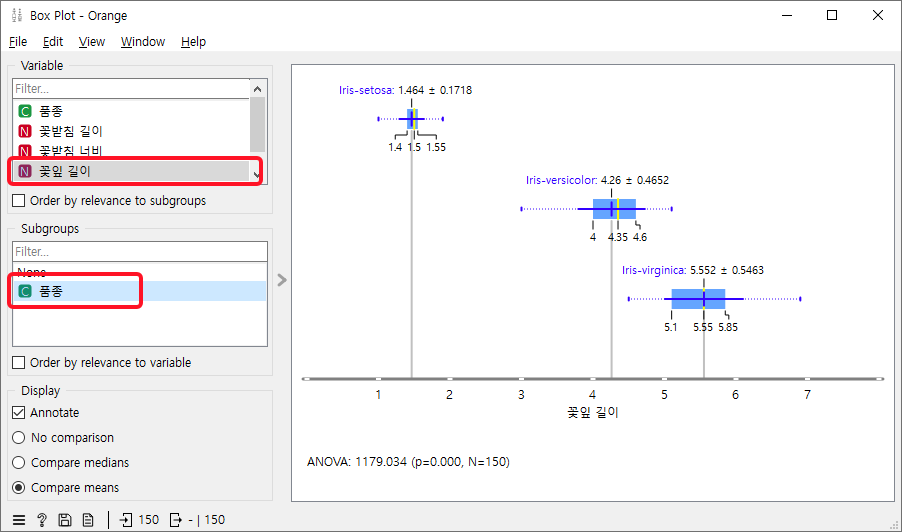
box plot의 의미
위 그래프에서 제일 오른쪽에 있는 버지니카를 보면서 box plot 각 항목의 의미를 확인해 보자.
평균 = 파란색 세로선 : 5.552
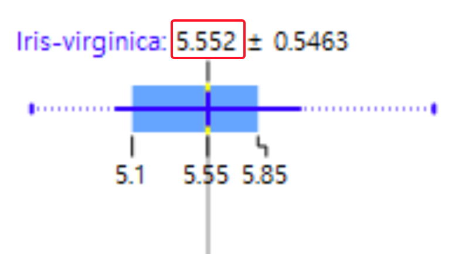
표준편차 : 0.5463
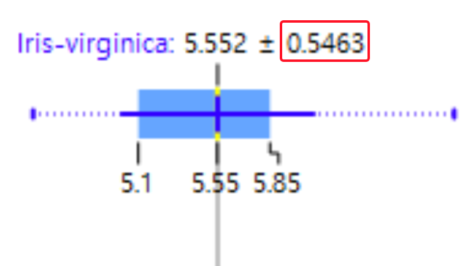
1사분위 : 5.1
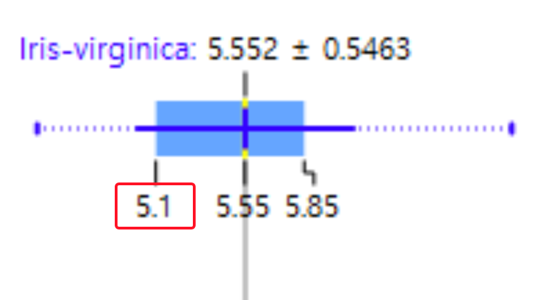
2사분위 = 노란색 세로선 = 중앙값 = 제일 가운데 값(median) : 5.55
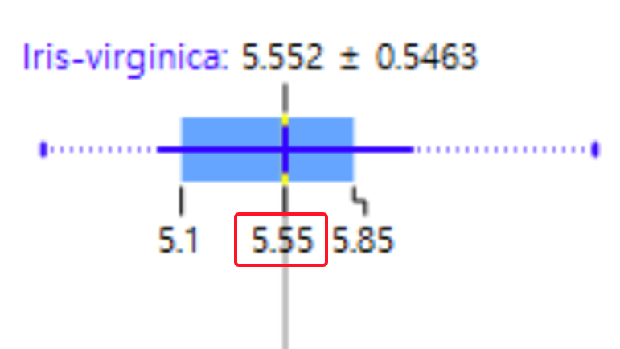
3사분위 : 5.85
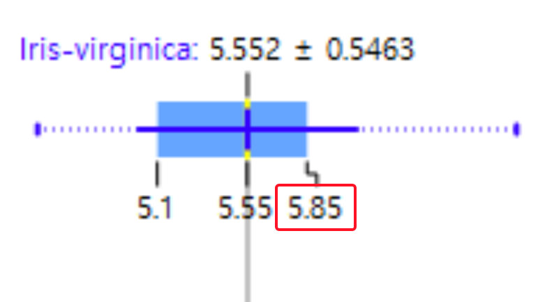
전체 데이터 영역
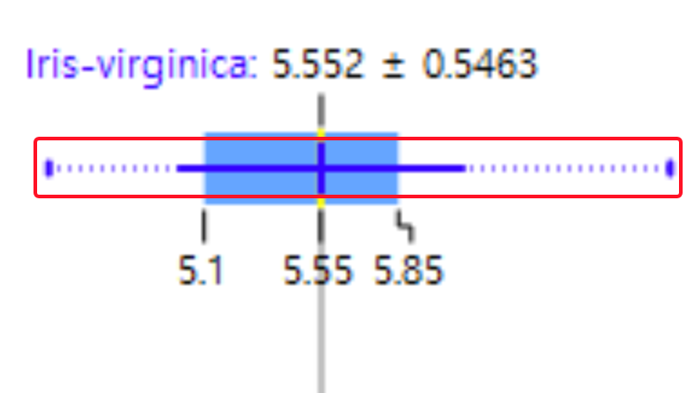
점선으로 표시한 영역이 전체 데이터 영역
실선으로 표시한 부분의 왼쪽 끝 : 평균 - 표준편차 = 5.552 - 0.5463 인 지점
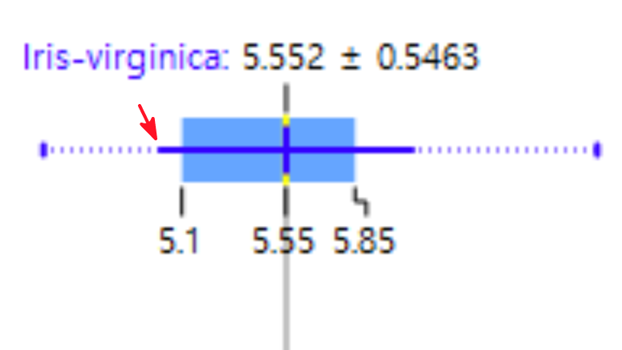
실선으로 표시한 부분의 오른쪽 끝 : 평균 + 표준편차 = 5.552 + 0.5463 인 지점
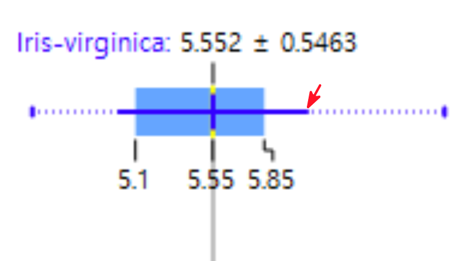
Linear Projection(선형 투영 시각화)
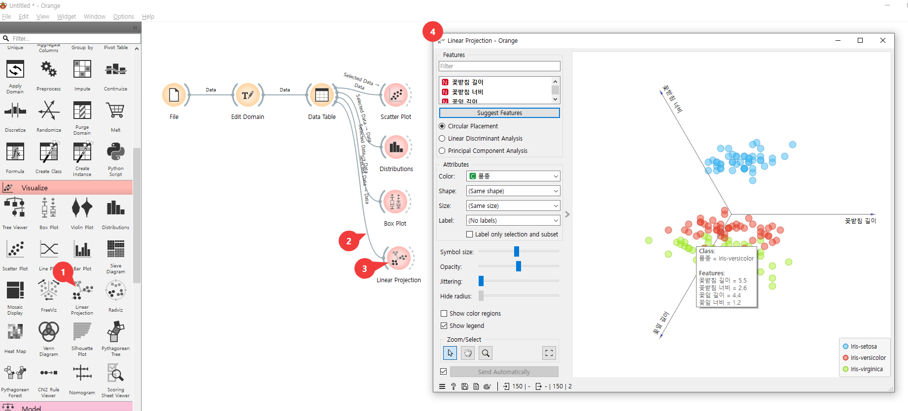
-
위젯 중 “Linear Projection“을 선택한다.
-
“Data Table“과 “Linear Projection“을 연결한다.
-
“Linear Projection“을 더블클릭한다.
-
“Linear Projection” 창이 나타난다.
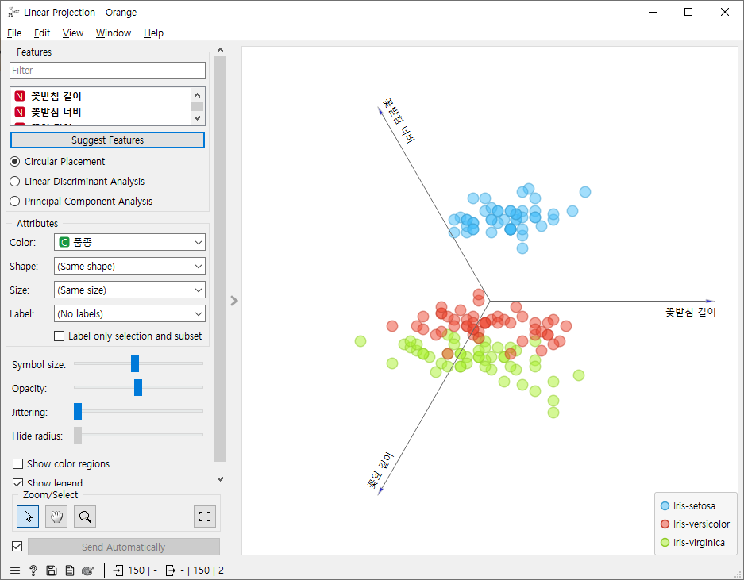
AI 학습
그래프 등을 통해 여기까지 본 사람은 이제 대체적으로 ‘아주 작은 꽃은 세토사’ 라는 등의 특징을 알 수 있지만 AI는 알지 못한다. AI에게 이런 특징을 학습시키자.
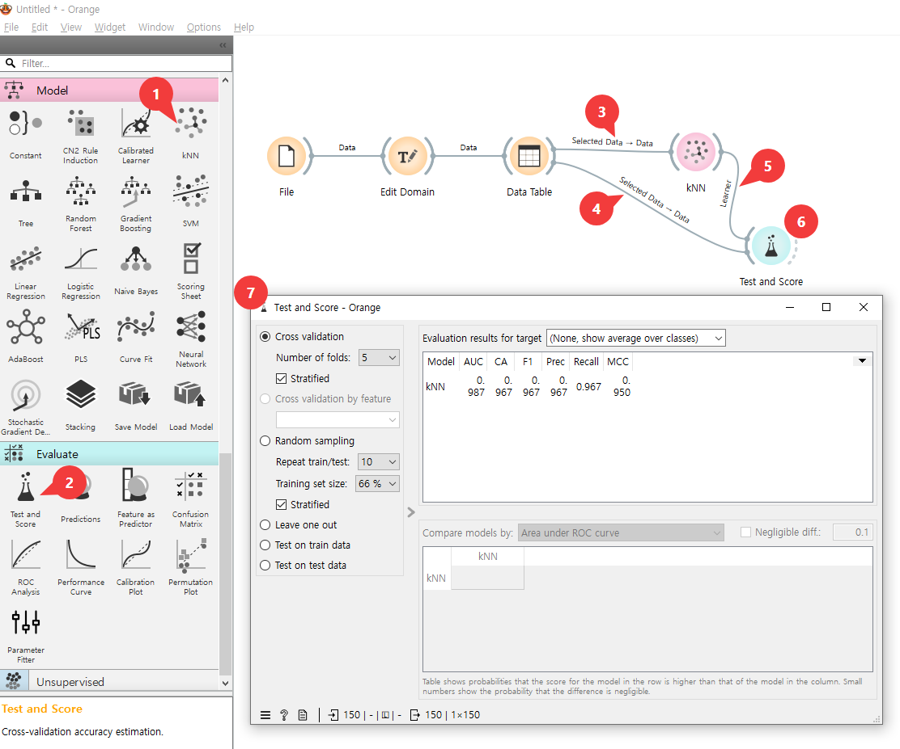
-
기존 시각화 노드들은 모두 지우고 시작한다.(놔둬도 상관없지만 불편하다)
-
Model 위젯 중 “KNN” 위젯을 클릭한다.
-
Evaluate 위젯 중 “Test and Score” 위젯을 클릭한다.
-
“Data Table” 노드와 “KNN” 노드를 연결한다.
-
“Data Table” 노드와 “Test and Score” 노드를 연결한다.
-
“KNN” 노드와 “Test and Score” 노드를 연결한다.
-
“Test and Score” 노드를 더블클릭한다.
-
학습 결과를 확인한다.
KNN 위젯
-
KNN 알고리즘에 의해 동작하는 AI 모델.
-
K-NN(K-Nearest Neightbors, K-최근접 이웃) 위젯
-
학습한 결과가 여기에 저장된다 = 가중치가 여기에 저장된다.
-
이제 붓꽃의 꽃잎, 꽃받침 등의 정보로 붓꽃의 품종을 알고 싶으면 관련 데이터 학습이 끝난 이 노드에게 물어보면 된다.
Test and Score 위젯
- 데이터를 받아 학습하고 성능을 평가하는 위젯
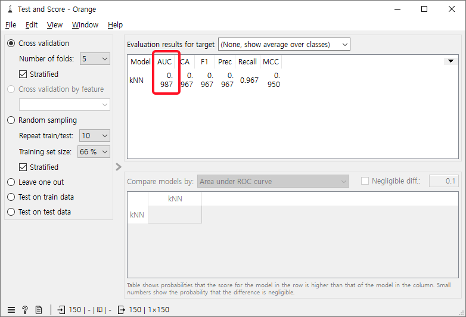
AUC는 accuracy(정확도)로 0.987 = 98.7%의 정확도로 붓꽃의 정보를 보고 품종을 맞췄다는 뜻.
새로운 붓꽃 데이터 주고 맞춰보라 시키기
기존 붓꽃 데이터 형식으로 새로운 데이터 생성하기
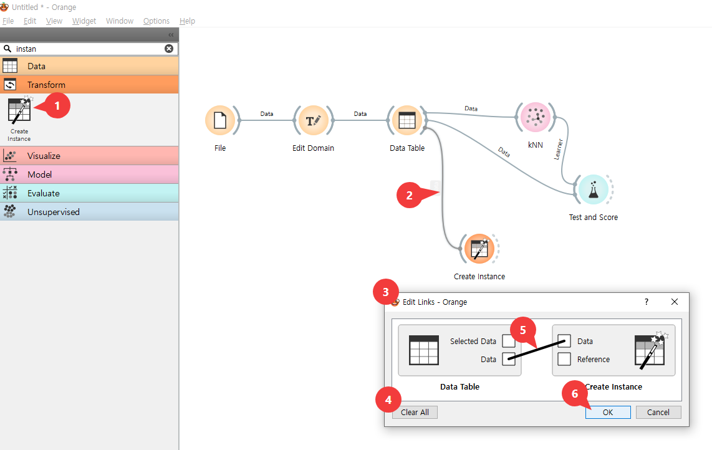
-
Transform 에서 “Create Instance” 위젯을 클릭한다.
-
“Data Table” 노드와 “Create Instance” 노드를 연결한다.
-
연결하자 마자 Edit Links 창이 나타난다.
-
“Clear All” 버튼을 누른다. 연결선이 없어진다.
-
“Data“와 “Data“를 연결한다.
-
OK 버튼을 누른다.
새로운 데이터 입력
들판을 다니다 붓꽃을 발견했다. 이 붓꽃의 품종을 확인하기 위해 꽃잎의 길이와 너비, 꽃받침의 길이와 너비를 측정했다. 그리고 이전에 학습시켜 놓은 붓꽃 AI 모델에게 그 값을 주면서 품종이 무엇인지 물어보는 과정이다.
하지만 실제로는 지금 우리 손에 붓꽃이 없기 때문에 기존 데이터를 참조해서 대략적인 값을 만들어 보겠다.
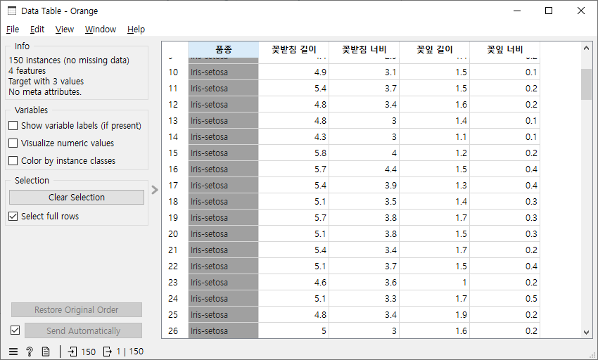
“Data Table” 노드를 더블클릭하면 위와 같이 3가지 품종의 데이터들을 볼 수 있다.
여기서 우리는 세토사의 기존 값을 참조해 새로운 값을 만들어 보겠다.
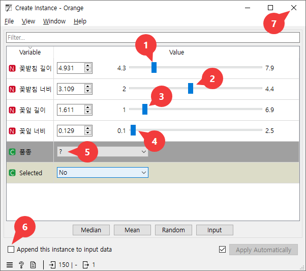
-
슬라이더를 조정해 꽃받침 길이를 4.9 와 비슷한 값으로 바꾼다.
-
슬라이더를 조정해 꽃받침 너비를 3.1 과 비슷한 값으로 바꾼다.
-
슬라이더를 조정해 꽃잎 길이를 1.6 과 비슷한 값으로 바꾼다.
-
슬라이더를 조정해 꽃잎 너비를 0.1 과 비슷한 값으로 바꾼다.
-
품종은 “?“로 바꾼다. 우리는 AI에게 이게 뭔지 물어보는 중이다. 학습할 때처럼 정답은 주지 않는다.
-
“Append this instance to input data“의 체크를 푼다. 이 체크를 하면 기존 150개의 데이터에 지금 방금 내가 새로 입력한 데이터를 추가로 해서 151개의 데이터가 AI에게 넘어가게 된다. 우리가 원하는 건 지금 방금 발견한 붓꽃 하나의 품종이니 이 체크를 풀어 이 데이터 하나만 AI에게 넘어가도록 한다.
예측 위젯 추가
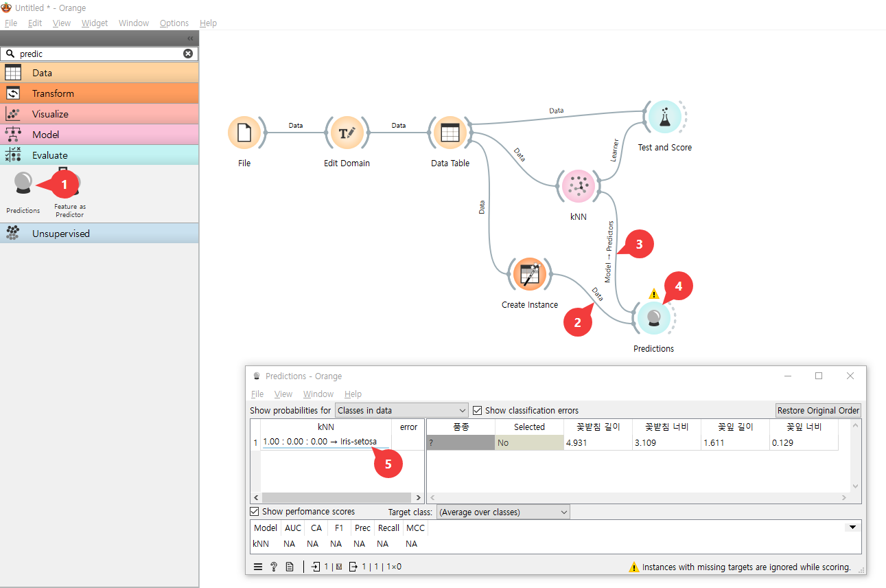
-
Evalute 에서 “Predictions” 위젯을 클릭한다.
-
“Predictions” 노드가 추가되면 “Create instance” 노드와 연결한다.
-
“KNN” 노드와 연결한다.
-
“Predictions” 노드를 더블클릭한다.
-
KNN이 어떤 품종으로 예측했는지 확인한다. 여기서는 우리가 값 입력할 때 예제로 사용했던 세토사가 표시된 걸 확인할 수 있다.
AI 모델에게 계속 물어보기
같은 방법으로 다양한 길이를 주면서 테스트하며 의도한 품종으로 잘 예측하는지 확인하자.